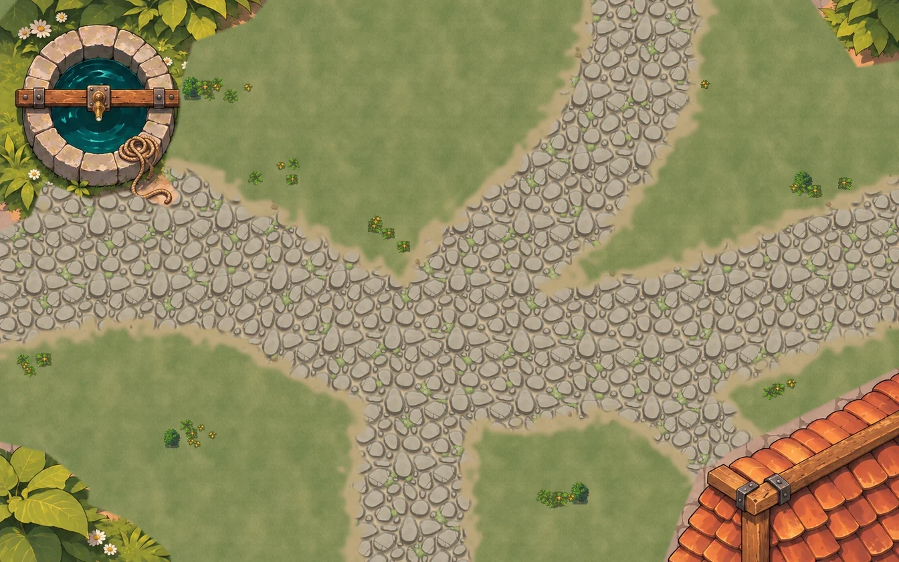

ZQSD / flèches pour marcher, Espace pour esquiver. Maintiens le clic pour bander l’arc et relâche pour tirer. Maintiens une touche de 1 à 4, vise et relâche pour lancer la compétence. Le clic droit annule la visée.
Sur écran tactile, maintiens une compétence, glisse jusqu’à la cible et relâche. La source te soigne quand tu t’en approches.
Gardes et animations adaptés de Tuscan Knight, par Bleed. Archer articulé adapté de Animated Top Down Survivor Player, par Riley Gombart. Planches recadrées et recolorées, arc et équipement adaptés pour Aldoria. Ces deux œuvres sont sous CC BY 3.0.
Pavage peint par Melissa Krautheim (MELLE) et herbe de profpatonildo, et végétation d’ansimuz, sous CC0. Teintes et chemins adaptés au Hameau.